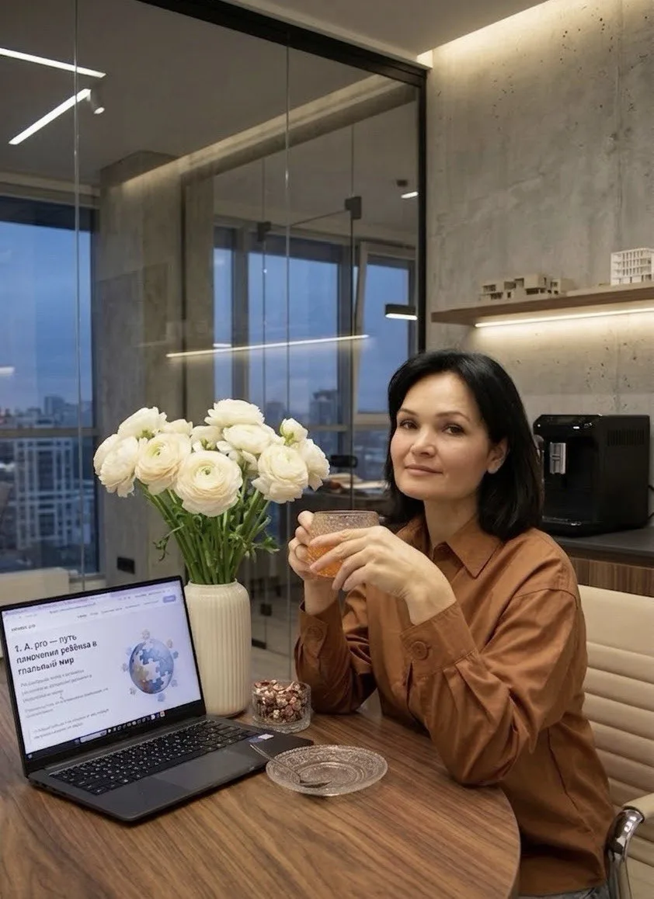

ABA_pro
Ирина Слесь — специалист по ABA
Помогаю детям, семьям и специалистам выстраивать путь развития, который работает не только на занятиях, а в реальной жизни. Моя задача — не просто сформировать навык, а сделать так, чтобы ребёнок мог использовать его дома, в общении, в обучении и повседневности.
Записаться на консультацию
Коротко обо мне
30+ лет педагогического опыта. 10 лет практики в Applied Behavior Analysis. Работаю с семьями, детьми и специалистами, которым важны не формальные отчёты, а реальные изменения в жизни ребёнка.
Образование и профессиональный путь
Преподаватель русского языка и литературы. Диплом логопеда. Базовое обучение на курсе инструкторов Новосибирский университет (Трубицына А.Н.). Курс для продвинутых практиков АНО ИПАП (Айса Шейффер). Теория и практика ABA: 6 модулей под руководством Ольги Шаповаловой. Путь: тьютор → специалист → аналитическое сопровождение кейсов.
С чем я работаю
- развитие коммуникации
- работа со сложным поведением
- навыки самостоятельности
- обучение родителей
- поддержка специалистов
- индивидуальные программы развития
- сопровождение кейсов
Мой подход
Ребёнок — не объект коррекции. Он активный участник своей жизни. Помощь должна усиливать ребёнка и семью, а не создавать дополнительное давление. ABA — это инструмент, который служит жизни, а не подменяет её.
Почему мне доверяют
- большой педагогический опыт
- практика в ABA без крайностей
- уважение к ребёнку и семье
- спокойный профессиональный стиль
- способность видеть систему, а не только отдельную проблему
- понятные шаги вместо хаоса
Личный принцип работы
Путь важнее скорости. Изменения строятся устойчиво: без обещаний “быстрого результата”, без давления, без шаблонов.
Для кого я могу быть полезна
- родителям, которые хотят понять ребёнка
- семьям в состоянии усталости и растерянности
- специалистам со сложными кейсами
- тем, кому нужен системный и бережный подход
- тем, кто устал от крайностей и хаоса

Работаю с уважением к ребёнку, семье и профессиональному пути каждого человека.
Если вам откликается такой подход — будем знакомы.
Если вам откликается такой подход — будем знакомы
Можно начать с консультации, вопроса в сообщении или разбора кейса.